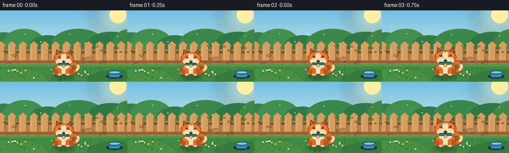
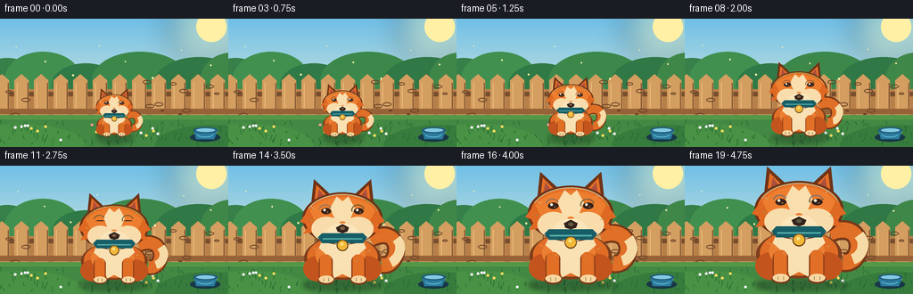

CODING AGENTS AS PIXEL WORLD MODELS
traex/GPT-5.6-Sol · instance_preservation_0047
点击播放 · 原生 RGB 像素
逐轮保存的候选
回放视频、检查图与代码变化。
每份候选均可单独播放。实际图片检查记录在下方工具轨迹中。
候选 01播放与检查图
点击播放 · 原生 RGB 像素


展开代码变化
--- 上一保存版本
+++ 本次保存版本
@@ -0,0 +1,195 @@
+from pathlib import Path
+import json, math, random
+import numpy as np
+from PIL import Image, ImageDraw, ImageFilter
+import artifact_io
+
+CASE_DIR = Path(__file__).resolve().parent
+spec = json.loads((CASE_DIR / 'task_spec.json').read_text())
+W, H, N = spec['width'], spec['height'], spec['frames']
+SS = 4
+random.seed(47)
+
+# Fixed decorative positions (deterministic).
+grass_blades = [(random.randint(0, W), random.randint(118, 143), random.randint(2, 7), random.choice([-1,1])) for _ in range(90)]
+flowers = [(random.randint(8,248), random.randint(118,139), random.choice([(255,221,94),(247,153,158),(239,239,246)])) for _ in range(18)]
+wood_knots = [(random.randint(5,250), random.randint(70,109), random.randint(2,5)) for _ in range(15)]
+
+def Q(v): return int(round(v * SS))
+def xy(box): return tuple(Q(v) for v in box)
+
+def rounded(draw, box, radius, fill, outline=None, width=1):
+ draw.rounded_rectangle(xy(box), radius=Q(radius), fill=fill, outline=outline, width=max(1,Q(width)))
+
+def background(frame_i):
+ im = Image.new('RGB', (W*SS, H*SS))
+ p = im.load()
+ # Soft morning sky gradient.
+ for y in range(H*SS):
+ yy = y/(H*SS-1)
+ if yy < .78:
+ u = yy/.78
+ c = tuple(int(a*(1-u)+b*u) for a,b in zip((112,191,231),(224,238,218)))
+ else:
+ u = (yy-.78)/.22
+ c = tuple(int(a*(1-u)+b*u) for a,b in zip((106,166,83),(61,125,63)))
+ for x in range(W*SS): p[x,y]=c
+ d = ImageDraw.Draw(im, 'RGBA')
+ # Sun and luminous haze.
+ glow = Image.new('RGBA', im.size, (0,0,0,0)); gd=ImageDraw.Draw(glow,'RGBA')
+ gd.ellipse(xy((190,-25,267,52)), fill=(255,239,164,80))
+ glow=glow.filter(ImageFilter.GaussianBlur(Q(15))); im=Image.alpha_composite(im.convert('RGBA'),glow); d=ImageDraw.Draw(im,'RGBA')
+ d.ellipse(xy((220,-8,254,26)), fill=(255,240,165,210))
+ # Layered distant shrubs.
+ for cx,cy,rx,ry,col in [(8,72,34,28,(55,128,74,255)),(48,68,43,31,(65,144,79,255)),(96,74,38,24,(47,122,70,255)),(157,69,54,32,(60,136,75,255)),(223,72,50,29,(48,120,69,255)),(260,68,35,30,(63,135,72,255))]:
+ d.ellipse(xy((cx-rx,cy-ry,cx+rx,cy+ry)),fill=col)
+ # Warm wooden fence, a fixed scale reference.
+ d.rectangle(xy((0,79,256,108)), fill=(184,128,73,255))
+ d.rectangle(xy((0,82,256,87)), fill=(122,79,46,80))
+ for x in range(-6,263,22):
+ d.polygon([(Q(x),Q(108)),(Q(x),Q(69)),(Q(x+8),Q(62)),(Q(x+16),Q(69)),(Q(x+16),Q(108))], fill=(211,158,96,255))
+ d.line([(Q(x+3),Q(72)),(Q(x+3),Q(105))], fill=(236,187,123,100), width=Q(1))
+ d.line([(Q(x+15),Q(72)),(Q(x+15),Q(106))], fill=(115,72,43,100), width=Q(1))
+ d.rectangle(xy((0,101,256,107)), fill=(151,98,55,255))
+ for x,y,r in wood_knots:
+ d.ellipse(xy((x-r,y-r*.45,x+r,y+r*.45)), outline=(105,65,39,75), width=Q(1))
+ # Ground, with subtle horizontal depth bands.
+ d.rectangle(xy((0,108,256,144)), fill=(68,137,67,255))
+ d.rectangle(xy((0,108,256,113)), fill=(84,151,73,255))
+ d.ellipse(xy((-45,118,95,168)), fill=(73,145,68,130))
+ d.ellipse(xy((174,119,300,165)), fill=(55,123,61,120))
+ # Grass and flowers.
+ sway=math.sin(frame_i*.34)*.6
+ for x,y,l,sgn in grass_blades:
+ d.line([(Q(x),Q(y)),(Q(x+sgn*(1.5+sway)),Q(y-l))], fill=(35,104,49,145), width=Q(.65))
+ for x,y,c in flowers:
+ stem=(38,106,49,150)
+ d.line([(Q(x),Q(y+3)),(Q(x),Q(y-2))],fill=stem,width=Q(.7))
+ d.ellipse(xy((x-1.4,y-3.4,x+1.4,y-.6)),fill=(*c,220))
+ # Bowl at right: constant size reinforces growth.
+ d.ellipse(xy((213,128,247,138)), fill=(24,56,72,90))
+ d.polygon([xy((217,125,))[0:2] if False else (Q(217),Q(125)),(Q(244),Q(125)),(Q(240),Q(135)),(Q(220),Q(135))], fill=(43,123,157,255))
+ d.ellipse(xy((217,121.5,244,128.5)), fill=(36,93,126,255))
+ d.ellipse(xy((220,123,241,127)), fill=(131,203,227,255))
+ d.arc(xy((221,127,239,133)),0,180,fill=(102,190,213,180),width=Q(1))
+ # Tiny drifting pollen in the light.
+ for k in range(8):
+ x=18+k*31 + 2*math.sin(frame_i*.15+k)
+ y=30+(k*17)%49 + 1.5*math.cos(frame_i*.2+k)
+ r=.6+(k%3)*.25
+ d.ellipse(xy((x-r,y-r,x+r,y+r)),fill=(255,242,174,130))
+ return im
+
+def bezier(p0,p1,p2,p3,n=30):
+ out=[]
+ for i in range(n):
+ t=i/(n-1); u=1-t
+ out.append((u**3*p0[0]+3*u*u*t*p1[0]+3*u*t*t*p2[0]+t**3*p3[0],u**3*p0[1]+3*u*u*t*p1[1]+3*u*t*t*p2[1]+t**3*p3[1]))
+ return out
+
+def draw_dog(base, scale, frame_i):
+ # Feet stay planted at y=132 throughout; every feature scales together to preserve identity.
+ cx, ground = 128.0, 132.0
+ bob = math.sin(frame_i*.58)*0.65*min(scale,1)
+ layer=Image.new('RGBA',base.size,(0,0,0,0)); d=ImageDraw.Draw(layer,'RGBA')
+ def P(p): return (Q(cx+p[0]*scale), Q(ground+(p[1]+bob)*scale))
+ def B(b):
+ x0,y0,x1,y1=b
+ a=P((x0,y0)); c=P((x1,y1)); return (a[0],a[1],c[0],c[1])
+ def LW(w): return max(Q(.7),Q(w*scale))
+ # Ground shadow, responsive to apparent body size.
+ sh=Image.new('RGBA',base.size,(0,0,0,0)); sd=ImageDraw.Draw(sh,'RGBA')
+ sd.ellipse((Q(cx-48*scale),Q(ground-5),Q(cx+51*scale),Q(ground+8)), fill=(24,57,33,105))
+ sh=sh.filter(ImageFilter.GaussianBlur(Q(3.0))); layer=Image.alpha_composite(layer,sh); d=ImageDraw.Draw(layer,'RGBA')
+ # Tail behind the body: a distinctive cream-tipped curl.
+ wag=math.sin(frame_i*.82)*4.0
+ pts=bezier((34,-55),(75,-72+wag),(72,-18+wag*.25),(48,-23),n=35)
+ pts=[P(p) for p in pts]
+ d.line(pts,fill=(116,57,25,255),width=LW(22),joint='curve')
+ d.line(pts,fill=(224,111,39,255),width=LW(17),joint='curve')
+ tip=bezier((66,-53+wag*.65),(76,-42+wag*.8),(67,-28+wag*.4),(59,-26),n=13)
+ d.line([P(p) for p in tip],fill=(247,219,166,255),width=LW(12),joint='curve')
+ # Haunches and compact sitting body.
+ d.ellipse(B((-47,-58,47,-5)), fill=(126,62,27,255)) # outline rim
+ d.ellipse(B((-43,-58,43,-8)), fill=(224,109,38,255))
+ d.ellipse(B((-48,-34,-12,-3)), fill=(195,84,29,255))
+ d.ellipse(B((12,-34,48,-3)), fill=(195,84,29,255))
+ # Warm body highlight.
+ d.ellipse(B((-33,-54,28,-16)), fill=(235,128,51,255))
+ # Cream chest ruff.
+ chest=[(-23,-57),(-29,-44),(-21,-37),(-25,-28),(-14,-20),(-10,-7),(0,-12),(10,-7),(14,-20),(25,-28),(21,-37),(29,-44),(23,-57)]
+ d.polygon([P(p) for p in chest],fill=(249,224,177,255))
+ d.ellipse(B((-20,-53,20,-20)),fill=(250,225,180,255))
+ # Front legs, dark under-lines and pale toes.
+ for side in (-1,1):
+ x=side*20
+ d.rounded_rectangle(B((x-9,-35,x+8,-3)),radius=LW(7),fill=(145,65,25,255))
+ d.rounded_rectangle(B((x-7.5,-36,x+6.5,-4)),radius=LW(6),fill=(225,111,38,255))
+ d.ellipse(B((x-10,-9,x+10,1)), fill=(117,57,25,255))
+ d.ellipse(B((x-9,-10,x+9,-1)), fill=(248,215,161,255))
+ for dx in (-3,3): d.line([P((x+dx,-7)),P((x+dx,-3))],fill=(180,133,88,160),width=LW(.7))
+ # Ears behind head, thick russet edge then orange center.
+ ear_l=[(-39,-91),(-35,-128),(-10,-105)]
+ ear_r=[(39,-91),(35,-128),(10,-105)]
+ d.polygon([P(p) for p in ear_l],fill=(111,52,24,255)); d.polygon([P(p) for p in ear_r],fill=(111,52,24,255))
+ d.polygon([P((-35,-96)),P((-32,-121)),P((-14,-103))],fill=(229,111,39,255))
+ d.polygon([P((35,-96)),P((32,-121)),P((14,-103))],fill=(229,111,39,255))
+ d.polygon([P((-31,-103)),P((-29,-116)),P((-19,-103))],fill=(173,79,61,255))
+ d.polygon([P((31,-103)),P((29,-116)),P((19,-103))],fill=(173,79,61,255))
+ # Neck/head outline and face.
+ d.ellipse(B((-49,-112,49,-48)),fill=(112,51,23,255))
+ d.ellipse(B((-46,-110,46,-50)),fill=(229,112,39,255))
+ d.ellipse(B((-42,-106,42,-56)),fill=(237,126,47,255))
+ # Angular cheek tufts give a dog-like silhouette.
+ d.polygon([P((-41,-91)),P((-52,-76)),P((-41,-72)),P((-48,-61)),P((-28,-65))],fill=(223,104,34,255))
+ d.polygon([P((41,-91)),P((52,-76)),P((41,-72)),P((48,-61)),P((28,-65))],fill=(223,104,34,255))
+ # White forehead blaze, identical in all frames.
+ blaze=[(-7,-107),(-15,-93),(-10,-81),(-17,-72),(0,-77),(17,-72),(10,-81),(15,-93),(7,-107),(0,-101)]
+ d.polygon([P(p) for p in blaze],fill=(249,222,174,255))
+ # Cream cheeks and muzzle.
+ d.ellipse(B((-38,-82,-1,-53)),fill=(249,220,171,255))
+ d.ellipse(B((1,-82,38,-53)),fill=(249,220,171,255))
+ d.ellipse(B((-20,-74,20,-48)),fill=(252,229,187,255))
+ # Brows and eyes; blink once near the middle.
+ blink = max(0.0, 1.0-abs(frame_i-11)/1.15)
+ eye_h=7.2*(1-.88*blink)
+ for side in (-1,1):
+ ex=side*20
+ d.arc(B((ex-9,-97,ex+7,-84)),190 if side<0 else 160,335 if side<0 else 350,fill=(138,61,25,160),width=LW(1.4))
+ d.ellipse(B((ex-6,-89-eye_h/2,ex+6,-89+eye_h/2)),fill=(54,35,27,255))
+ if blink < .65:
+ d.ellipse(B((ex-3.5,-92,ex-.5,-89)),fill=(255,250,225,245))
+ d.ellipse(B((ex+1,-88.5,ex+2.5,-87)),fill=(172,100,57,220))
+ # Nose and happy mouth.
+ d.polygon([P((-8,-69)),P((0,-73)),P((8,-69)),P((6,-64)),P((0,-62)),P((-6,-64))],fill=(52,34,28,255))
+ d.ellipse(B((-3,-70,3,-66)),fill=(102,75,58,190))
+ d.line([P((0,-63)),P((0,-58))],fill=(83,43,29,255),width=LW(1.4))
+ d.arc(B((-14,-64,0,-51)),355,100,fill=(85,42,28,255),width=LW(1.5))
+ d.arc(B((0,-64,14,-51)),80,185,fill=(85,42,28,255),width=LW(1.5))
+ # Teal collar and gold round tag are strong identity cues.
+ d.polygon([P((-30,-57)),P((-25,-50)),P((25,-50)),P((30,-57)),P((25,-62)),P((-25,-62))],fill=(23,94,103,255))
+ d.line([P((-24,-55)),P((24,-55))],fill=(70,170,171,230),width=LW(2))
+ d.ellipse(B((-7,-54,7,-40)),fill=(114,72,25,255))
+ d.ellipse(B((-5.8,-53,5.8,-41.4)),fill=(242,184,55,255))
+ d.ellipse(B((-2.5,-50.5,1,-47)),fill=(255,235,141,220))
+ # Sparse fur highlights, kept in fixed local positions.
+ for (x,y,ang) in [(-34,-92,-1),(29,-99,1),(-36,-77,-1),(34,-73,1),(-31,-42,-1),(30,-39,1),(-14,-31,-1),(15,-27,1)]:
+ d.line([P((x,y)),P((x+ang*4,y-2))],fill=(255,175,79,120),width=LW(.8))
+ # Soft golden outline from the upper-right sunlight.
+ d.arc(B((-46,-110,46,-50)),205,342,fill=(255,184,77,130),width=LW(1.0))
+ return Image.alpha_composite(base,layer)
+
+frames=[]
+for i in range(N):
+ t=i/(N-1)
+ eased=t*t*(3-2*t)
+ scale=.42 + .60*eased
+ bg=background(i)
+ out=draw_dog(bg,scale,i)
+ out=out.convert('RGB').resize((W,H),Image.Resampling.LANCZOS)
+ # Mild finishing contrast; maintain RGB uint8.
+ arr=np.asarray(out,dtype=np.uint8)
+ frames.append(arr)
+frames=np.stack(frames,axis=0)
+artifact_io.save(frames, CASE_DIR)
+print('saved', frames.shape, frames.dtype, 'scales', .42, 1.02)
可观测工具轨迹
实际执行的命令与返回图片。
命令 1exit 0
/bin/bash -lc "cat prompt.txt && printf '\\n---RULES---\\n' && cat GENERATION_RULES.md && printf '\\n---SPEC---\\n' && cat task_spec.json"
命令 2exit 0
/bin/bash -lc "find . -maxdepth 2 -type f -printf '%p\\n' | sort"
命令 3exit 0
/bin/bash -lc "sed -n '1,240p' artifact_io.py"
命令 4exit 0
/bin/bash -lc "cat > generate.py <<'PY'
from pathlib import Path
import json, math, random
import numpy as np
from PIL import Image, ImageDraw, ImageFilter
import artifact_io
CASE_DIR = Path(__file__).resolve().parent
spec = json.loads((CASE_DIR / 'task_spec.json').read_text())
W, H, N = spec['width'], spec['height'], spec['frames']
SS = 4
random.seed(47)
# Fixed decorative positions (deterministic).
grass_blades = [(random.randint(0, W), random.randint(118, 143), random.randint(2, 7), random.choice([-1,1])) for _ in range(90)]
flowers = [(random.randint(8,248), random.randint(118,139), random.choice([(255,221,94),(247,153,158),(239,239,246)])) for _ in range(18)]
wood_knots = [(random.randint(5,250), random.randint(70,109), random.randint(2,5)) for _ in range(15)]
def Q(v): return int(round(v * SS))
def xy(box): return tuple(Q(v) for v in box)
def rounded(draw, box, radius, fill, outline=None, width=1):
draw.rounded_rectangle(xy(box), radius=Q(radius), fill=fill, outline=outline, width=max(1,Q(width)))
def background(frame_i):
im = Image.new('RGB', (W*SS, H*SS))
p = im.load()
# Soft morning sky gradient.
for y in range(H*SS):
yy = y/(H*SS-1)
if yy < .78:
u = yy/.78
c = tuple(int(a*(1-u)+b*u) for a,b in zip((112,191,231),(224,238,218)))
else:
u = (yy-.78)/.22
c = tuple(int(a*(1-u)+b*u) for a,b in zip((106,166,83),(61,125,63)))
for x in range(W*SS): p[x,y]=c
d = ImageDraw.Draw(im, 'RGBA')
# Sun and luminous haze.
glow = Image.new('RGBA', im.size, (0,0,0,0)); gd=ImageDraw.Draw(glow,'RGBA')
gd.ellipse(xy((190,-25,267,52)), fill=(255,239,164,80))
glow=glow.filter(ImageFilter.GaussianBlur(Q(15))); im=Image.alpha_composite(im.convert('RGBA'),glow); d=ImageDraw.Draw(im,'RGBA')
d.ellipse(xy((220,-8,254,26)), fill=(255,240,165,210))
# Layered distant shrubs.
for cx,cy,rx,ry,col in [(8,72,34,28,(55,128,74,255)),(48,68,43,31,(65,144,79,255)),(96,74,38,24,(47,122,70,255)),(157,69,54,32,(60,136,75,255)),(223,72,50,29,(48,120,69,255)),(260,68,35,30,(63,135,72,255))]:
d.ellipse(xy((cx-rx,cy-ry,cx+rx,cy+ry)),fill=col)
# Warm wooden fence, a fixed scale reference.
d.rectangle(xy((0,79,256,108)), fill=(184,128,73,255))
d.rectangle(xy((0,82,256,87)), fill=(122,79,46,80))
for x in range(-6,263,22):
d.polygon([(Q(x),Q(108)),(Q(x),Q(69)),(Q(x+8),Q(62)),(Q(x+16),Q(69)),(Q(x+16),Q(108))], fill=(211,158,96,255))
d.line([(Q(x+3),Q(72)),(Q(x+3),Q(105))], fill=(236,187,123,100), width=Q(1))
d.line([(Q(x+15),Q(72)),(Q(x+15),Q(106))], fill=(115,72,43,100), width=Q(1))
d.rectangle(xy((0,101,256,107)), fill=(151,98,55,255))
for x,y,r in wood_knots:
d.ellipse(xy((x-r,y-r*.45,x+r,y+r*.45)), outline=(105,65,39,75), width=Q(1))
# Ground, with subtle horizontal depth bands.
d.rectangle(xy((0,108,256,144)), fill=(68,137,67,255))
d.rectangle(xy((0,108,256,113)), fill=(84,151,73,255))
d.ellipse(xy((-45,118,95,168)), fill=(73,145,68,130))
d.ellipse(xy((174,119,300,165)), fill=(55,123,61,120))
# Grass and flowers.
sway=math.sin(frame_i*.34)*.6
for x,y,l,sgn in grass_blades:
d.line([(Q(x),Q(y)),(Q(x+sgn*(1.5+sway)),Q(y-l))], fill=(35,104,49,145), width=Q(.65))
for x,y,c in flowers:
stem=(38,106,49,150)
d.line([(Q(x),Q(y+3)),(Q(x),Q(y-2))],fill=stem,width=Q(.7))
d.ellipse(xy((x-1.4,y-3.4,x+1.4,y-.6)),fill=(*c,220))
# Bowl at right: constant size reinforces growth.
d.ellipse(xy((213,128,247,138)), fill=(24,56,72,90))
d.polygon([xy((217,125,))[0:2] if False else (Q(217),Q(125)),(Q(244),Q(125)),(Q(240),Q(135)),(Q(220),Q(135))], fill=(43,123,157,255))
d.ellipse(xy((217,121.5,244,128.5)), fill=(36,93,126,255))
d.ellipse(xy((220,123,241,127)), fill=(131,203,227,255))
d.arc(xy((221,127,239,133)),0,180,fill=(102,190,213,180),width=Q(1))
# Tiny drifting pollen in the light.
for k in range(8):
x=18+k*31 + 2*math.sin(frame_i*.15+k)
y=30+(k*17)%49 + 1.5*math.cos(frame_i*.2+k)
r=.6+(k%3)*.25
d.ellipse(xy((x-r,y-r,x+r,y+r)),fill=(255,242,174,130))
return im
def bezier(p0,p1,p2,p3,n=30):
out=[]
for i in range(n):
t=i/(n-1); u=1-t
out.append((u**3*p0[0]+3*u*u*t*p1[0]+3*u*t*t*p2[0]+t**3*p3[0],u**3*p0[1]+3*u*u*t*p1[1]+3*u*t*t*p2[1]+t**3*p3[1]))
return out
def draw_dog(base, scale, frame_i):
# Feet stay planted at y=132 throughout; every feature scales together to preserve identity.
cx, ground = 128.0, 132.0
bob = math.sin(frame_i*.58)*0.65*min(scale,1)
layer=Image.new('RGBA',base.size,(0,0,0,0)); d=ImageDraw.Draw(layer,'RGBA')
def P(p): return (Q(cx+p[0]*scale), Q(ground+(p[1]+bob)*scale))
def B(b):
x0,y0,x1,y1=b
a=P((x0,y0)); c=P((x1,y1)); return (a[0],a[1],c[0],c[1])
def LW(w): return max(Q(.7),Q(w*scale))
# Ground shadow, responsive to apparent body size.
sh=Image.new('RGBA',base.size,(0,0,0,0)); sd=ImageDraw.Draw(sh,'RGBA')
sd.ellipse((Q(cx-48*scale),Q(ground-5),Q(cx+51*scale),Q(ground+8)), fill=(24,57,33,105))
sh=sh.filter(ImageFilter.GaussianBlur(Q(3.0))); layer=Image.alpha_composite(layer,sh); d=ImageDraw.Draw(layer,'RGBA')
# Tail behind the body: a distinctive cream-tipped curl.
wag=math.sin(frame_i*.82)*4.0
pts=bezier((34,-55),(75,-72+wag),(72,-18+wag*.25),(48,-23),n=35)
pts=[P(p) for p in pts]
d.line(pts,fill=(116,57,25,255),width=LW(22),joint='curve')
d.line(pts,fill=(224,111,39,255),width=LW(17),joint='curve')
tip=bezier((66,-53+wag*.65),(76,-42+wag*.8),(67,-28+wag*.4),(59,-26),n=13)
d.line([P(p) for p in tip],fill=(247,219,166,255),width=LW(12),joint='curve')
# Haunches and compact sitting body.
d.ellipse(B((-47,-58,47,-5)), fill=(126,62,27,255)) # outline rim
d.ellipse(B((-43,-58,43,-8)), fill=(224,109,38,255))
d.ellipse(B((-48,-34,-12,-3)), fill=(195,84,29,255))
d.ellipse(B((12,-34,48,-3)), fill=(195,84,29,255))
# Warm body highlight.
d.ellipse(B((-33,-54,28,-16)), fill=(235,128,51,255))
# Cream chest ruff.
chest=[(-23,-57),(-29,-44),(-21,-37),(-25,-28),(-14,-20),(-10,-7),(0,-12),(10,-7),(14,-20),(25,-28),(21,-37),(29,-44),(23,-57)]
d.polygon([P(p) for p in chest],fill=(249,224,177,255))
d.ellipse(B((-20,-53,20,-20)),fill=(250,225,180,255))
# Front legs, dark under-lines and pale toes.
for side in (-1,1):
x=side*20
d.rounded_rectangle(B((x-9,-35,x+8,-3)),radius=LW(7),fill=(145,65,25,255))
d.rounded_rectangle(B((x-7.5,-36,x+6.5,-4)),radius=LW(6),fill=(225,111,38,255))
d.ellipse(B((x-10,-9,x+10,1)), fill=(117,57,25,255))
d.ellipse(B((x-9,-10,x+9,-1)), fill=(248,215,161,255))
for dx in (-3,3): d.line([P((x+dx,-7)),P((x+dx,-3))],fill=(180,133,88,160),width=LW(.7))
# Ears behind head, thick russet edge then orange center.
ear_l=[(-39,-91),(-35,-128),(-10,-105)]
ear_r=[(39,-91),(35,-128),(10,-105)]
d.polygon([P(p) for p in ear_l],fill=(111,52,24,255)); d.polygon([P(p) for p in ear_r],fill=(111,52,24,255))
d.polygon([P((-35,-96)),P((-32,-121)),P((-14,-103))],fill=(229,111,39,255))
d.polygon([P((35,-96)),P((32,-121)),P((14,-103))],fill=(229,111,39,255))
d.polygon([P((-31,-103)),P((-29,-116)),P((-19,-103))],fill=(173,79,61,255))
d.polygon([P((31,-103)),P((29,-116)),P((19,-103))],fill=(173,79,61,255))
# Neck/head outline and face.
d.ellipse(B((-49,-112,49,-48)),fill=(112,51,23,255))
d.ellipse(B((-46,-110,46,-50)),fill=(229,112,39,255))
d.ellipse(B((-42,-106,42,-56)),fill=(237,126,47,255))
# Angular cheek tufts give a dog-like silhouette.
d.polygon([P((-41,-91)),P((-52,-76)),P((-41,-72)),P((-48,-61)),P((-28,-65))],fill=(223,104,34,255))
d.polygon([P((41,-91)),P((52,-76)),P((41,-72)),P((48,-61)),P((28,-65))],fill=(223,104,34,255))
# White forehead blaze, identical in all frames.
blaze=[(-7,-107),(-15,-93),(-10,-81),(-17,-72),(0,-77),(17,-72),(10,-81),(15,-93),(7,-107),(0,-101)]
d.polygon([P(p) for p in blaze],fill=(249,222,174,255))
# Cream cheeks and muzzle.
d.ellipse(B((-38,-82,-1,-53)),fill=(249,220,171,255))
d.ellipse(B((1,-82,38,-53)),fill=(249,220,171,255))
d.ellipse(B((-20,-74,20,-48)),fill=(252,229,187,255))
# Brows and eyes; blink once near the middle.
blink = max(0.0, 1.0-abs(frame_i-11)/1.15)
eye_h=7.2*(1-.88*blink)
for side in (-1,1):
ex=side*20
d.arc(B((ex-9,-97,ex+7,-84)),190 if side<0 else 160,335 if side<0 else 350,fill=(138,61,25,160),width=LW(1.4))
d.ellipse(B((ex-6,-89-eye_h/2,ex+6,-89+eye_h/2)),fill=(54,35,27,255))
if blink < .65:
d.ellipse(B((ex-3.5,-92,ex-.5,-89)),fill=(255,250,225,245))
d.ellipse(B((ex+1,-88.5,ex+2.5,-87)),fill=(172,100,57,220))
# Nose and happy mouth.
d.polygon([P((-8,-69)),P((0,-73)),P((8,-69)),P((6,-64)),P((0,-62)),P((-6,-64))],fill=(52,34,28,255))
d.ellipse(B((-3,-70,3,-66)),fill=(102,75,58,190))
d.line([P((0,-63)),P((0,-58))],fill=(83,43,29,255),width=LW(1.4))
d.arc(B((-14,-64,0,-51)),355,100,fill=(85,42,28,255),width=LW(1.5))
d.arc(B((0,-64,14,-51)),80,185,fill=(85,42,28,255),width=LW(1.5))
# Teal collar and gold round tag are strong identity cues.
d.polygon([P((-30,-57)),P((-25,-50)),P((25,-50)),P((30,-57)),P((25,-62)),P((-25,-62))],fill=(23,94,103,255))
d.line([P((-24,-55)),P((24,-55))],fill=(70,170,171,230),width=LW(2))
d.ellipse(B((-7,-54,7,-40)),fill=(114,72,25,255))
d.ellipse(B((-5.8,-53,5.8,-41.4)),fill=(242,184,55,255))
d.ellipse(B((-2.5,-50.5,1,-47)),fill=(255,235,141,220))
# Sparse fur highlights, kept in fixed local positions.
for (x,y,ang) in [(-34,-92,-1),(29,-99,1),(-36,-77,-1),(34,-73,1),(-31,-42,-1),(30,-39,1),(-14,-31,-1),(15,-27,1)]:
d.line([P((x,y)),P((x+ang*4,y-2))],fill=(255,175,79,120),width=LW(.8))
# Soft golden outline from the upper-right sunlight.
d.arc(B((-46,-110,46,-50)),205,342,fill=(255,184,77,130),width=LW(1.0))
return Image.alpha_composite(base,layer)
frames=[]
for i in range(N):
t=i/(N-1)
eased=t*t*(3-2*t)
scale=.42 + .60*eased
bg=background(i)
out=draw_dog(bg,scale,i)
out=out.convert('RGB').resize((W,H),Image.Resampling.LANCZOS)
# Mild finishing contrast; maintain RGB uint8.
arr=np.asarray(out,dtype=np.uint8)
frames.append(arr)
frames=np.stack(frames,axis=0)
artifact_io.save(frames, CASE_DIR)
print('saved', frames.shape, frames.dtype, 'scales', .42, 1.02)
PY
python generate.py"命令 5exit 0
/bin/bash -lc "python -m py_compile generate.py && python - <<'PY'
import numpy as np
z=np.load('pixels.npz')['pixels']
print('pixels',z.shape,z.dtype,'unique frames',len({z[:,:,i].tobytes() for i in range(z.shape[2])}))
PY
ls -lh pixels.npz index.html inspection.png frames/00.png frames/19.png"视觉工具实际返回图片 1

视觉工具实际返回图片 2

保存候选 1 份；完成命令 5 次；可验证图片返回 2 张。原始 API 响应与完整日志保留在本地。